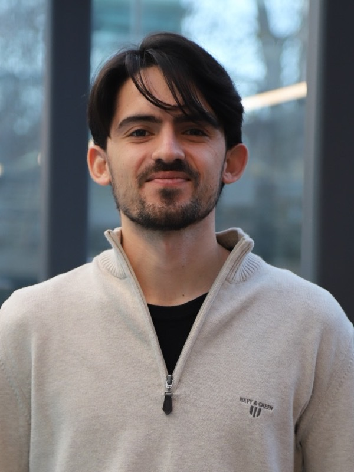

Andreas Makrides
PhD researcher at Imperial College London, building AI and optimisation methods for electricity markets, trading and energy.
I turn data into decisions in electricity markets: forecasting prices, pricing risk, valuing storage and flexibility, and solving market-clearing problems more than 20× faster than commercial solvers.
From forecast to risk: a battery trading strategy
-
1Forecast machine learning and statistics
Mean absolute error £0
-
2Optimise dynamic programming
Profit on the day £0
-
3Backtest trading
Profit uplift over benchmark 0
-
4Risk quantitative risk
5% value at risk £0
Show the optimiser code
def optimise(prices, d, eta):
"""Exact DP for a 1 MW battery holding d MWh."""
V = [0.0] * (d + 1) # value at the end of the day
policy = []
for p in reversed(prices):
V_new, act = [0.0] * (d + 1), [0] * (d + 1)
for s in range(d + 1):
best, a = V[s], 0 # idle
if s < d and V[s + 1] - p > best:
best, a = V[s + 1] - p, +1 # charge
if s > 0 and V[s - 1] + eta * p > best:
best, a = V[s - 1] + eta * p, -1 # discharge
V_new[s], act[s] = best, a
V = V_new
policy.insert(0, act)
return V[0], policyfunction optimise(prices, d, η)
V = zeros(d + 1) # value at the end of the day
policy = Vector{Vector{Int}}()
for p in reverse(prices)
Vn, act = similar(V), zeros(Int, d + 1)
for s in 0:d
best, a = V[s+1], 0 # idle
if s < d && V[s+2] - p > best
best, a = V[s+2] - p, 1 # charge
end
if s > 0 && V[s] + η * p > best
best, a = V[s] + η * p, -1 # discharge
end
Vn[s+1], act[s+1] = best, a
end
V = Vn
pushfirst!(policy, act)
end
return V[1], policy
end
About
I am a PhD student at Imperial College London, supervised by Prof. Pierre Pinson and Dr Fei Teng. My research asks how electricity markets should work when most power comes from wind, solar and batteries. I design pricing mechanisms, optimisation models and machine-learning methods that make those markets cheaper to run and more reliable.
Before my PhD I completed an MSc in Sustainable Energy Futures at Imperial with Distinction, and a BSc in Electrical Engineering at the University of Cyprus, where I graduated as valedictorian. Before Imperial, I built forecasting, state-estimation and real-time simulation tools running on live energy systems at the PHAETHON Centre of Excellence and the FOSS Research Centre in Cyprus, worked on EU research projects in smart grids and virtual power plants, and quantified how crypto-mining load moves electricity prices as a research intern at Texas A&M University.
I am also interested in financial markets and quantitative trading, and I am currently building a systematic momentum research framework in Python.
- London, UK
- Python, Julia, MATLAB
- Greek and English
- ORCID 0009-0001-1795-0729
Research
-
1st place, EPRI competition 2025
Machine learning that speeds up market clearing
Unit commitment decides which power plants run each hour, and it is a large mixed-integer problem. We learn which on/off decisions can safely be fixed, with thresholds chosen by their cost on the solution.
-
Markets for risk and long-duration storage
Storage that covers weeks of low wind earns money rarely and unpredictably. We quantify how missing markets for trading that risk lead to underinvestment in long-duration storage.
-
Forecasting electricity prices
Balancing-market prices are volatile and hard to predict. We forecast imbalance prices with random forests retrained on a rolling window, so the model keeps up with a changing market.
Recent publications
See all publications-
2026
Learning to Fix: Optimisation-Aware Machine Learning for Accelerated Unit Commitment
-
2026
Ancillary Services in High-Renewable Power Systems: Comparing Market Design, Emerging Trends, and Future Challenges
- 2026
Experience
-
Oct 2026 – now
Systematic Momentum Research Personal project
London, UK
- Building a tested Python backtesting engine for time-series and cross-sectional momentum on ETFs and S&P 500 stocks, using survivorship-free CRSP data.
- Implementing EWMA volatility targeting and Ledoit–Wolf mean–variance optimisation, with walk-forward testing and deflated Sharpe ratios.
- Paper trading monthly rebalances on Interactive Brokers.
-
Nov 2025 – now
Graduate Teaching Assistant, Imperial College London
Dyson School of Design Engineering, London, UK
- Supporting teaching through assessment panels, exam invigilation and marking.
-
May – Jun 2024
Energy & Sustainability Summer School, Texas A&M University at Qatar
Doha, Qatar
-
2024
Co-founder, PREVENTA JA StartUp
Nicosia, Cyprus
- Co-founded a student start-up building an AI and machine-learning app for preventing non-communicable diseases.
- Won the JA Cyprus National Innovation Competition and represented Cyprus at GEN-E 2024 in Catania.
-
Jan – Aug 2024
Research Scientist, PHAETHON Centre of Excellence
Nicosia, Cyprus
- Real-time simulation, modelling and state estimation of the University of Cyprus Smart Energy Campus, using Python and Typhoon HIL.
- Built simulation and control software for microgrids, with a real-time interface for monitoring and analysing live data.
- EU project: TRUST-PV, improving the performance and reliability of solar power plants.
-
Jun – Jul 2023
Research Intern, Texas A&M University
College Station, Texas, USA
- Quantified the impact of blockchain-based crypto-mining load on electricity market prices and spatial price resolution.
- Forecast Bitcoin's electricity consumption with time-series and machine-learning models, and presented the work at a poster session.
-
Jun 2022 – Dec 2023
Research Scientist, FOSS Research Centre for Sustainable Energy
University of Cyprus, Nicosia
- Developed state-estimation methods that infer unobserved system states from noisy, real-time measurements in microgrids and smart energy systems.
- Built predictive models and forecasts, working with smart-meter and Raspberry Pi data.
- EU projects: FEVER (flexible energy production, demand and storage-based virtual power plants for electricity markets) and FLEXGRID (smart-grid architecture and markets for high renewable penetration).
-
Jun – Dec 2021
Research Intern, FOSS Research Centre for Sustainable Energy
University of Cyprus, Nicosia
- Designed and built a voltage-comparator circuit that switches lighting on when a solar panel's output falls below a threshold.
- Geo-spatial visualisation projects, and the EU project EDDIE on education for the digitalisation of energy.
-
Jul 2019 – Sep 2020
Soldier, Cyprus National Guard
Nicosia, Cyprus
- Completed 14 months of compulsory military service.
-
Jun – Aug 2017
English Teaching Assistant, English Semiotics
Nicosia, Cyprus
Education
-
2025 – now
PhD in Machine Learning & Optimisation for Electricity Markets
Imperial College London, Dyson School of Design Engineering
- Supervised by Prof. Pierre Pinson and Dr Fei Teng.
- Won 1st place in the 2025 EPRI AI-ccelerating Unit Commitment competition.
- Milestones: research plan and early-stage assessment completed, late-stage assessment due September 2027.
- Elective coursework: Probability for Statistics, Statistical Methods for Finance.
- Societies: AlgoSoc (Imperial College Algorithmic Trading Society), Poker Society, FBU (student finance network), Engineers Without Borders UK.
-
2024 – 2025
MSc in Sustainable Energy Futures Distinction
Imperial College London
- Thesis: Incomplete Markets for Risk and Storage Duration in Future Electricity Markets (75%), supervised by Dr Elina Spyrou and Adam Suski.
- Selected modules: Energy Economics & Policy (81.17%), Methods for the Analysis of Energy Systems (79.13%), Data Science & Digitalisation in the Energy Sector (70%), Sustainable Energy Entrepreneurship.
- Outstanding Team Member Award, Sustainable Energy Futures Conference 2025.
- Engineers Without Borders UK, Imperial Classic Car Club.
-
2020 – 2024
BSc in Electrical Engineering 9.89/10, First Class Honours
University of Cyprus
- Valedictorian of the Class of 2024 and recipient of the President of the Republic of Cyprus Award.
- Thesis: Advanced Real-Time Simulation Modelling and State Estimation of the Smart Energy Campus of the University of Cyprus (10/10).
- Selected modules (all 10/10): Linear Algebra, Differential Equations, Numerical Analysis, Probability, Statistics, Signals & Systems, Control Theory, Power Engineering. Also Power Systems Analysis and Renewable Sources of Energy.
- Junior Achievement StartUp: 1st place in the National Innovation Competition, and represented Cyprus at GEN-E 2024.
Honours and awards
- Apr 2026
1st place, EPRI AI-ccelerating Unit Commitment competition
Electric Power Research Institute. With Benjamin Fritz and Maryam Fetanat, supervised by Pierre Pinson, ahead of 30 teams and more than 100 participants from academia and industry.
- Sep 2025
Outstanding Team Member Award
Sustainable Energy Futures Conference, Imperial College London. Nominated by my MSc cohort.
- Jul 2024
Undergraduate Student Poster Award, 2nd place
IEEE Power & Energy Society General Meeting 2024, Seattle.
- Jul 2024
Technical Chamber of Cyprus Award
Best academic performance in the Department of Electrical Engineering, academic year 2024.
- Jun 2024
President of the Republic of Cyprus Award
Valedictorian of the University of Cyprus, Class of 2024, presented by President Nikos Christodoulides.
- Jun 2024
Academic Excellence Award, University of Cyprus
Best academic performance for four consecutive years (2021–2024) in the Faculty of Engineering and the Department of Electrical Engineering.
- Jun 2024
Junior Achievement (JA) StartUp Award
1st place in the JA Cyprus National Innovation Competition with PREVENTA, an AI app for preventing non-communicable diseases that I co-founded. Represented Cyprus at GEN-E 2024, Europe's largest entrepreneurship festival, in Catania, Italy.
- Apr 2024
Seeds for the Future Scholarship, Huawei Technologies (Cyprus)
Best academic performance in the Department of Electrical Engineering, academic year 2023.
- Scouting
Certified Scout of Democracy
Awarded by the 7th President of the Republic of Cyprus, Nicos Anastasiades.
Skills
- Programming
- Python, Julia, MATLAB (advanced). R, C (intermediate).
- Machine learning and data
- NumPy, Pandas, scikit-learn, PyTorch. Time-series forecasting, state estimation, statistical modelling.
- Optimisation
- Linear, convex and non-convex optimisation. Mixed-integer programming (MILP, MISOCP). Stochastic optimisation, chance constraints and CVaR risk measures. Decomposition methods (Dantzig–Wolfe, ADMM). Equilibrium models.
- Languages
- Greek (native), English (fluent, IELTS Academic 8.0).
- Certificates
- ECDL (7 modules), First Aid (Cyprus Red Cross).
- Memberships
- Energy Institute (Associate Member), IEEE and the IEEE Power & Energy Society, Cyprus Radio Amateur Society.
Beyond research
- Scouting
- Member of the Cyprus Scouts Association since 2007, now Deputy Scout Leader of the 273rd Air Scouts. Certified Scout of Democracy, awarded by the President of the Republic of Cyprus.
- Running
- Training for the 2027 London Marathon, fundraising for the MND Association.
- Sport and hobbies
- Padel, football, and amateur radio as a member of the Cyprus Radio Amateur Society since 2018.
- Societies
- AlgoSoc (Imperial College Algorithmic Trading Society), Poker Society, FBU (student finance network), Engineers Without Borders UK, Imperial Classic Car Club.
- Interests
- Financial markets, quantitative trading strategies, investing.
Conferences and events
- Nov 2026
G-Research London Quant Challenge
London, UK.
- Oct 2026
Susquehanna (SIG) poker tournament
17 October 2026.
- Sep 2026
Energy Trading Week Europe 2026
Business Design Centre, London, UK.
- Jul 2026
IFORS 2026, International Federation of Operational Research Societies
Vienna, Austria. Talk: Dantzig–Wolfe Decomposition for Co-Optimisation and Pricing of Energy and Ancillary Services.
- May 2026
9th DTU PES Summer School
Technical University of Denmark. Poster: How to Design and Value Ancillary Services in IBR-Dominated Power Systems?
- Oct 2024
SyNERGY MED 2024
Limassol, Cyprus. Presented my paper Predicting Energy Market Imbalance Prices with Random Forest: A Rolling Window Approach.
- Jul 2024
IEEE Power & Energy Society General Meeting 2024
Seattle, USA. Presented my paper Data-driven Voltage Estimation in Microgrids as a poster, winning 2nd place in the undergraduate student poster competition.
- Jul 2024
GEN-E 2024, Junior Achievement Europe
Catania, Italy. Represented Cyprus with PREVENTA after winning the national innovation competition.
- Jul 2023
IEEE Power & Energy Society General Meeting 2023
Orlando, USA.
News
- Nov 2026
Took part in the G-Research London Quant Challenge.
- Oct 2026
Played in the Susquehanna (SIG) poker tournament.
- Sep 2026
Two preprints out on arXiv: “Learning to Fix”, submitted to IEEE Transactions on Power Systems, and our review of ancillary-service markets across seven power systems.
- Sep 2026
Attended Energy Trading Week Europe 2026 in London.
- Sep 2026
I will run the London Marathon on 25 April 2027 to raise at least £2,700 for the MND Association.
- Jul 2026
Presented Dantzig–Wolfe Decomposition for Co-Optimisation and Pricing of Energy and Ancillary Services at IFORS 2026 in Vienna.
- May 2026
Presented a poster on designing and valuing ancillary services in IBR-dominated power systems at the 9th DTU PES Summer School, Technical University of Denmark.
- Apr 2026
Our team, Benjamin Fritz, Maryam Fetanat and I, supervised by Pierre Pinson, won 1st place in EPRI's AI-ccelerating Unit Commitment competition, ahead of 30 teams. The Dyson School of Design Engineering featured the result.
- Oct 2025
Started my PhD at Imperial College London, and posted our paper on missing risk markets to arXiv.
- Sep 2025
Presented my MSc thesis at Imperial, graduated with Distinction, and received the Outstanding Team Member Award.
- Oct 2024
Presented my paper on imbalance price forecasting with random forests at SyNERGY MED 2024 in Limassol.
- Jul 2024
Presented my paper on voltage estimation in microgrids as a poster at the IEEE PES General Meeting in Seattle, winning 2nd place in the undergraduate poster competition. Also received the Technical Chamber of Cyprus Award.
- Jul 2024
Represented Cyprus with PREVENTA at GEN-E 2024 in Catania, Italy.
- Jun 2024
Graduated from the University of Cyprus as valedictorian with the President of the Republic of Cyprus Award, and PREVENTA won the JA Cyprus StartUp competition.
- Apr 2024
Received the Huawei Seeds for the Future Scholarship.
- Aug 2023
Completed a two-month research internship at Texas A&M University, ending with a poster presentation.